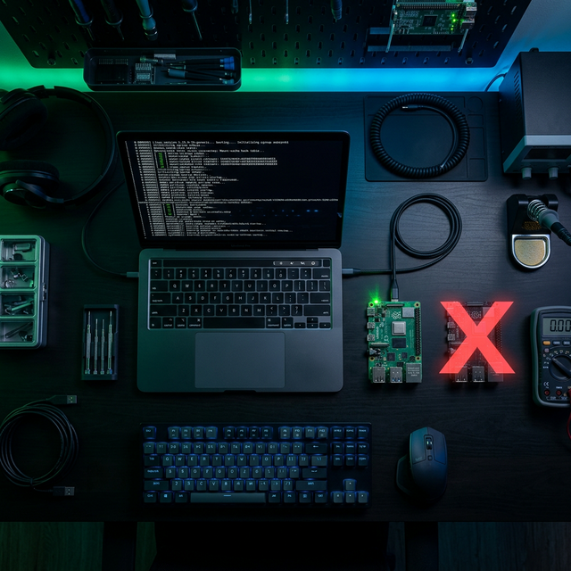

🧪 Lab: ARM64 启动故障排查
从"串口沉默"到找出真凶。
在 QEMU 中复现、诊断、修复 ARM64 内核启动故障。
开始 Lab
🧪
Lab: ARM64 启动故障排查
Terminal
💬 Lab 引导
AI 助教答疑
你好！我是这个 Lab 的 AI 助教。点击左侧带有虚线的
高亮关键词
，或直接在下方输入框向我提问。
⏮
▶
⏭
0 / 0
1x
Space
播放
←
→
切换